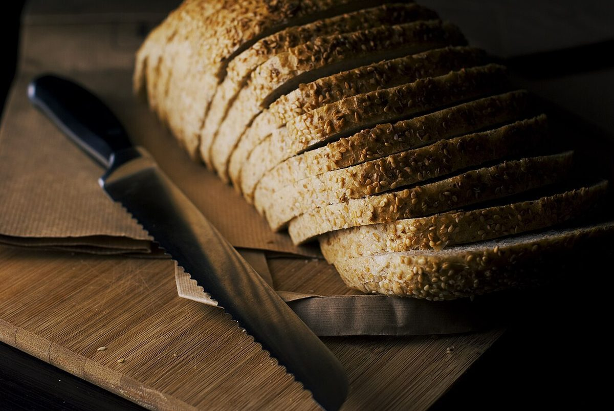

口コミ
いつか行ける日を想像して
お店の情報がまだ少ないため、これから訪れたい気持ちを制作側が想像して書いたものです。
以下は制作側の創作で、実在のお客様の投稿ではありません。実際の口コミ・評価とは関係ありません。
営業時間などが分かったら、行ってみたいです。それまでは、Instagramの更新を楽しみにしています。
Instagramをのぞいてみたいです。お店のことは、投稿が増えたら楽しみに待ちたいと思います。
いつか行けたら、まずは所在地を確かめてから向かいたいです。そんな日を思い浮かべています。
